Scroll for Health: How TikTok Turns Wellness into Profitable Content
This blog examines how TikTok wellness content transforms health anxiety, creator trust and platform design into commercial pathways that influence public health.
A small pink patch. A four-second TikTok video. Millions of views. More than a million dollars in sales. This blog asks how a simple wellness product can travel so quickly from someone's body, to someone else's For You Page, to a shopping basket.
TikTok wellness is a paradox: the same platform can make health advice more accessible, but also amplify quick-fix claims, body dissatisfaction and impulsive consumption. Our central question is therefore not whether TikTok health content is simply helpful or harmful, but how its commercial influence can be made accountable to evidence, transparency and public health.
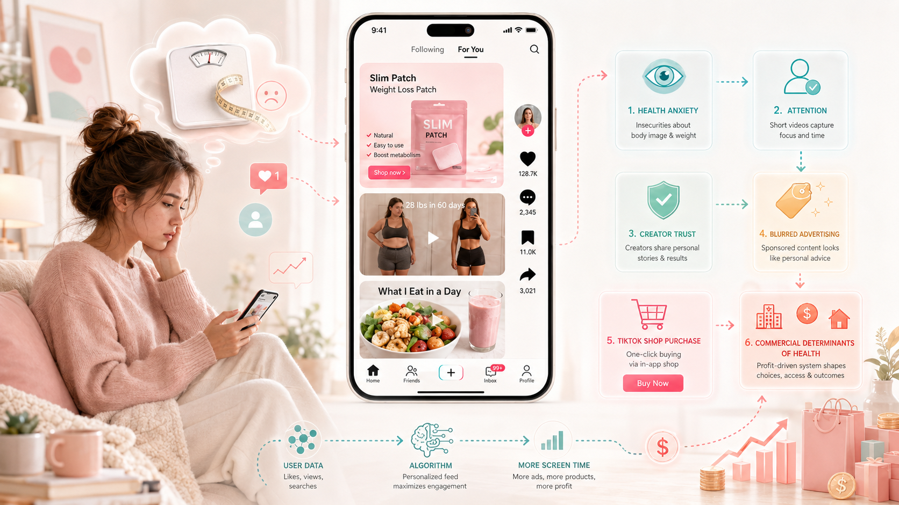
Figure 1. From scroll to purchase: how TikTok's wellness ecosystem turns health anxiety, creator trust and platform design into commercial opportunity.
Part 1
Tiny Patches, Big Profits: A Window into TikTok's Wellness Economy
Imagine scrolling through TikTok. A video appears on your For You page. An ordinary creator with only 9,000 followers uses four seconds to show exactly where a small pink circular patch should be placed on the body. The video is strikingly simple: no flashy editing, no dramatic voiceover, just someone performing an unremarkable physical action.
Yet this foursecond video received 24.2 million views and 125,000 likes (Haiduoke Cross-border Navigation, 2025a).
Why? Because the patch promises one thing: weight loss without pills, without dieting - simply by adhering it to the skin.
The product is Kind Patches, as shown in figure 1, a GLP1 metabolic balance topical patch. https://vm.tiktok.com/ZN9NQf8yN4QhD-f9tIs/
After launching on TikTok US in June 2025, it sold 83,100 units within 25 days, generating over US$1.24 million in revenue (Haiduoke Cross-border Navigation, 2025a; Yiofong, 2025). Its primary ingredients are unremarkable: berberine, pomegranate, cinnamon and Lglutamine - all natural plant extracts (Haiduoke Cross-border Navigation, 2025a).
Kind Patches is used here not as an isolated scandal, but as a window into a wider TikTok wellness economy.
Similar weight loss patches, vibrating exercise machines, functional gummies and dietary supplements are spreading rapidly across TikTok through thousands of influencers (Haiduoke Cross-border Navigation, 2025b; IT Home, 2025). But this raises a more complicated question: when a product is sold through personal stories, body-transformation clips and health-related claims, where does advertising end and health influence begin?
This blog examines how TikTok's weight-loss and wellness ecosystem works through five connected layers: a viral product case, the platform's algorithmic architecture, influencer-led commercialisation, public health consequences, and the governance dilemma of who should decide what counts as harmful health information.
Part 2
How Health Content Spreads on TikTok
To understand why wellness products like Kind Patches can generate over a million dollars in sales within weeks, it is necessary to look at how TikTok itself is built — not simply as a social app, but as a behavioural prediction system in which platform design and commercial opportunity are structurally intertwined.
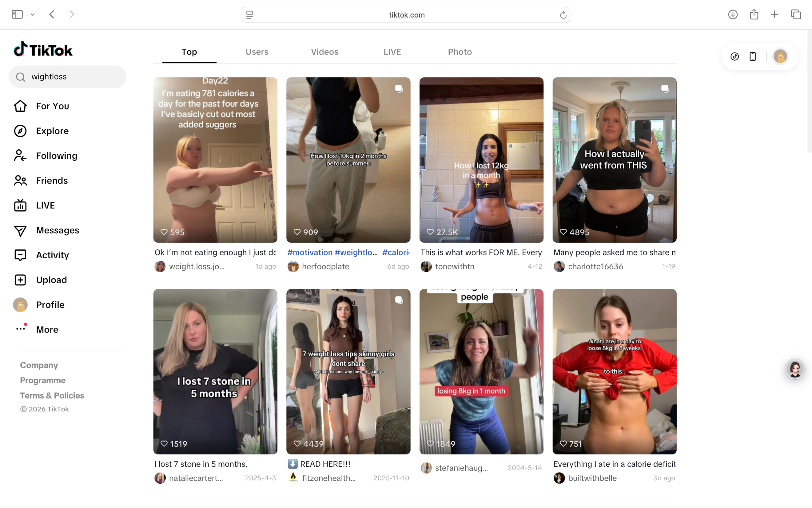
Figure 3. TikTok search results for #weightloss, showing calorie restriction content, transformation narratives and commercially linked health advice. Source: Screenshot captured by author, April 2026.
2.1 How TikTok Learns — and Locks You In
Unlike Instagram or YouTube, TikTok's For You Page decouples discovery from social relationships entirely, learning from micro-signals — pauses, rewatches, skips and searches — to predict what keeps a user engaged.
For health content, this has a specific consequence: even a brief pause on a weight-loss video can trigger repeated exposure to similar material. Research confirms that users captured in such loops find it difficult to escape (Vera and Ghosh, 2025), and that repeated exposure builds perceived credibility through familiarity, strengthening belief even without active engagement (Paul and Sely-Ann Headley-Johnson, 2025). TikTok's architecture does not merely reflect existing health anxieties — it may actively cultivate them.
2.2 Who Is Actually Being Reached?
Who TikTok reaches matters as much as how many. Its largest demographic — females aged 18-24 — is also the group most consistently identified as vulnerable to appearance-related content, body dissatisfaction, and disordered eating (Pew Research Center , 2024; Pryde and Prichard, 2022).
Social comparison theory helps explain why: adolescents are particularly prone to evaluating their worth against visible others, and on TikTok, those "others" are not random peers but algorithmically selected, high-performing transformation content (Festinger, 1954). When the algorithm repeatedly surfaces this content to vulnerable demographics, it does not simply meet an existing demand; it shapes the very anxieties it appears to satisfy.
2.3 Why Simple Always Beats Accurate
TikTok's short-form format rewards emotional immediacy over nuance — completion rate and interaction, not informational value, are the algorithm's primary signals. This creates a structural bias in which informational accuracy and algorithmic visibility are in tension. It is worth acknowledging that users are not purely passive: some actively seek out qualified professionals and critically evaluate what they see (Merga, 2025).
However, even critically-minded users operate within an algorithmic environment that disproportionately amplifies simplified, emotionally immediate content. Health misinformation does not simply slip through moderation — it is, in structural terms, rewarded by the platform's own incentive design.
2.4 TikTok Shop: From Scroll to Checkout
What makes TikTok structurally distinct is TikTok Shop, launched in the UK in 2021 and the US in 2023. By embedding product tags directly within videos, a creator documenting a weight-loss journey can link to their promoted supplement within the same scroll — purchase completed without leaving the app. Nearly one in three TikTok users report having purchased a product after seeing it on the platform (Metricool, 2024).
Research suggests that many users recognize influencer posts as promotional, yet continue to treat them as authentic when embedded within personal storytelling (Djafarova and Bowes, 2021). This is not simply hidden advertising, but blurred advertising: commercially motivated content that remains emotionally credible precisely because it is indistinguishable from genuine personal experience.
2.5 A Platform Built for Commercial Health Content
Taken together, TikTok's algorithm, audience profile, format logic and integrated shopping infrastructure do not merely host commercial health content — they constitute the infrastructure through which health attention is systematically converted into economic value.
The commercial determinants of health framework identifies how corporate interests shape population health behaviors (Kickbusch, Allen and Franz, 2016) — on TikTok, this now operates at the level of individual scroll sessions. Understanding this platform architecture is essential to analyzing the commercialization dynamics examined in the next section.
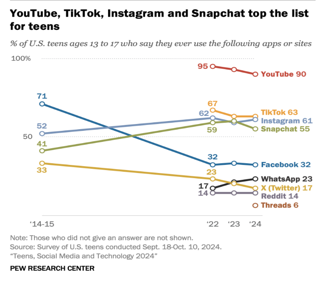
Figure 4. Pew Research Center (2024) data illustrating TikTok's demographic reach among teenagers and young adults. Source: Pew Research Center (2024) Teens, Social Media and Technology 2024.
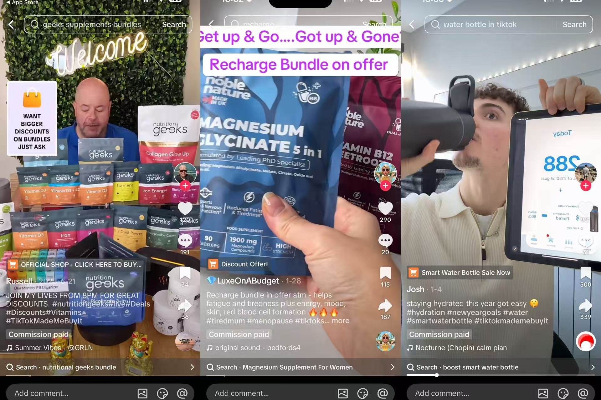
Figure 5. TikTok Shop product tag embedded within a health content video, demonstrating the direct integration of commerce and content within the app. Source: Screenshot captured by author, April 2026.
Part 3
The Business of TikTok Wellness: From Influence to Purchase
TikTok does not simply host wellness advertising. It reorganises health communication into a commercial pathway where attention becomes trust, trust becomes persuasion, and persuasion becomes immediate purchase.
3.1 Got your attention! THE ANXIETY!
Wellness content starts with a powerful emotional hook: the desire to improve the body. Weight loss, bloating, skin, metabolism and fitness are not neutral topics. They are tied to self-image, confidence and anxiety. TikTok's short-video format makes these concerns highly visible. A flat-stomach transformation (Figure 5), a 'what I eat in a day' routine (Figure 6) or a supplement review can communicate a promise of change within seconds.
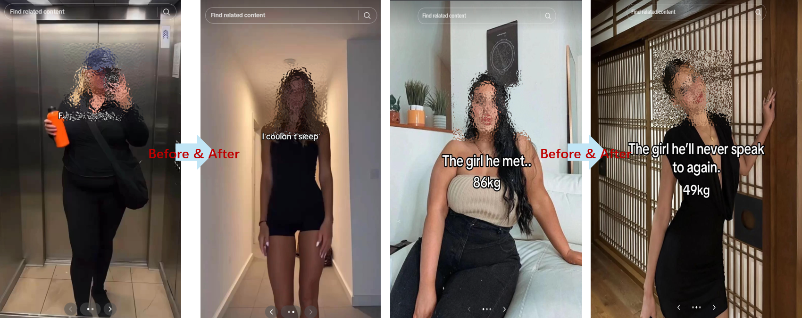
Figure 6. One of most popular content in TikTok -before-after transformation Source: Screenshot captured from TikTok by author, April 2026
This matters commercially because anxiety is good at holding attention. TikTok users are not just "viewers"; they watch, share and create. That matters commercially because every small action can help wellness content travel further (Omar and Dequan, 2020). In this way, wellness content turns private insecurity into measurable engagement. The more immediate the promise — less bloating, faster weight loss, better self-control — the easier it becomes to circulate.
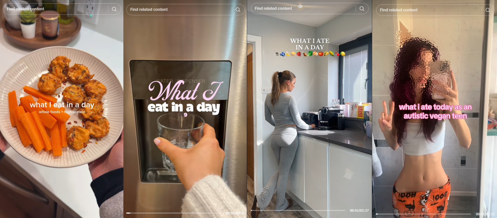
Figure 7. 'What I eat in a day' topic in TikTok, illustrating healthy diet promotion and indirectly indicating anxiety for healthy lifestyle and weight management. Source: Screenshot captured from TikTok by author, April 2026
The commercial pathway therefore begins before any purchase is made. It begins when health concern is converted into attention. TikTok does not have to create every anxiety from scratch; it can amplify existing insecurities and make them scrollable.
3.2 Trust is the infrastructure
Once TikTok captures attention, the next step is trust. In the wellness economy, products are rarely sold through a traditional brand voice alone. They are sold through people: ordinary-looking creators who appear relatable, emotionally honest and visually successful. This reflects what Abidin (2016) describes as the labour of visibility in influencer culture.
This is especially powerful for health and weight-loss products. A creator showing their body, meals, workouts or 'journey' can feel more convincing than a formal advertisement. Users may not feel they are watching a sales pitch. They may feel they are watching someone's daily life. The product becomes part of a routine, not a separate commercial message (Figure 7).
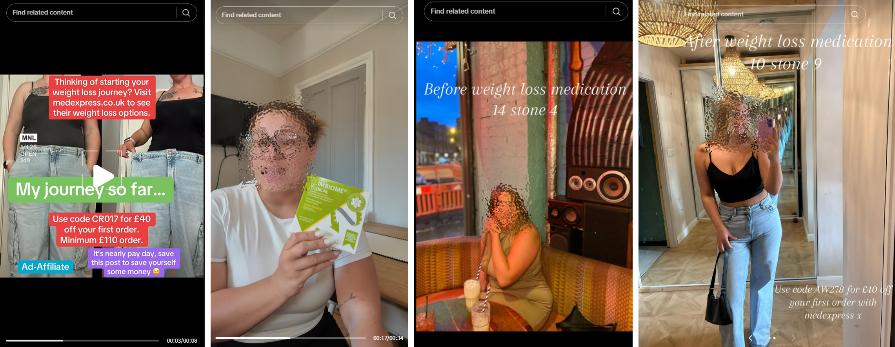
Figure 8. Seemingly real-life experiences strengthen the credibility of any promoted information Source: Screenshot captured from TikTok by author, April 2026
This is why influencer trust functions as commercial infrastructure. The creator's body and lifestyle become informal evidence, while clinical evidence may remain absent or invisible. A product does not need to prove itself in a medical sense if the creator's transformation appears to prove it visually. For TikTok wellness content, trust is not only emotional.
3.3 Anxiety is real, so is commercialisation
The difficulty is that TikTok wellness advertising does not always look like advertising. It often appears as personal experience: 'this helped me', 'my routine', 'how I lost weight', or 'what worked for my bloating'. Some users may recognise that creators earn money from sponsorships, affiliate links or TikTok Shop sales. But recognition does not remove the problem.
The issue is not only hidden advertising. It is blurred advertising. A creator may disclose a product link, but the commercial message is still wrapped inside a personal story. A viewer is not only evaluating a product claim; they are also responding to a person, a body, a routine and an emotional narrative.
This matters for public health because many health claims on TikTok work through implication rather than direct medical statements. A video may not explicitly say that a patch, tea or supplement causes weight loss. Instead, it may show a body transformation, describe feeling 'less bloated', place the product on screen and provide a purchase link. The advertising is present, but it is softened by the appearance of authenticity.
3.4 From emotional response to instant purchase
TikTok Shop completes the commercial pathway. A user can move from watching a transformation video to buying a product without leaving the app. This is not an accidental feature of TikTok. TikTok Business promotes tools such as Shop Ads and creator affiliate marketing precisely because they help brands convert attention into sales inside the platform (TikTok Business, 2023).
This design matters because health-related decisions usually require context: evidence of effectiveness, possible side effects, personal medical history and realistic expectations. TikTok Shop is not built around slow reflection. It is built around speed, convenience and impulse. A user who feels anxious, hopeful or inspired can act immediately.
Figure 9. Products showing up along with anxiety-causing content, converting emotional response to purchase impulse Source: Screenshot captured from TikTok by author, April 2026
The problem is not simply that TikTok sells products quickly. The problem is that it applies the logic of impulse shopping to products framed as health solutions (Figure 8). A weight-loss patch or supplement is presented like a beauty or fashion item: visually appealing, socially endorsed and instantly purchasable. It is particularly severe in live streaming scenario in which the host would create a falsified vibe where health concern becomes market demand.
3.5 Why Wellness Becomes a Public Health Business
Taken together, these steps show why TikTok wellness is more than ordinary advertising. The platform does not simply display health products. It helps organise how users encounter health problems, who they trust, what kinds of solutions feel credible, and how quickly those solutions can be bought.
This is why TikTok wellness content can be understood through the commercial determinants of health: the ways commercial systems shape health behaviours, choices and inequalities. In this case, health is framed as something to be continuously improved through consumption. Feeling bloated, insecure, tired or dissatisfied becomes not only a personal concern, but a commercial opportunity. This connects with Lupton's (2016) analysis of self-tracking and self-optimisation cultures, where health becomes an ongoing personal project that can also be drawn into commercial systems.
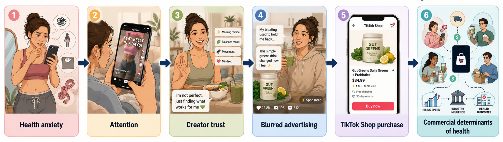
Figure 10. TikTok wellness content commercialisation pathways Source: AI generated by author, April 2026
The Kind Patches case introduced earlier illustrates this system. The reported sales figures should not be read as evidence that the product works. They show something different: how quickly a simple wellness claim can become visible, emotionally persuasive and immediately purchasable through TikTok's content-commerce ecosystem, as shown in Figure 9.
The issue, then, is not simply that users buy wellness products. It is that TikTok makes consumer purchase appear to be a normal route to health improvement. The next section examines what this means for public health: the harms, possible benefits and unequal risks created by algorithmically amplified health commerce.
Part 4
Public Health Consequences: Harm, Benefit and Unequal Exposure
The public health story of TikTok weight-loss content is not a simple story of harm. The same feed that sells detox patches and "what I eat in a day" routines can also surface practical meal ideas, no-equipment workouts and peer support. TikTok can lower barriers to health information, but its commercial architecture rewards simple, emotional, purchasable claims. The question is when its health content becomes helpful, harmful or misleadingly persuasive.
This makes TikTok a commercial determinants of health case. The World Health Organization defines commercial determinants as private-sector activities that affect health directly or indirectly, positively or negatively (World Health Organization, 2023). On TikTok, health claims, influencer storytelling, recommendation systems and shopping links sit in the same scroll. A video is not only a message; it can also be a marketing funnel.
4.1 Hidden harms
The first risk is misinformation. Quick-fix content works because it compresses a complex health issue into an immediate claim: use this patch, follow this routine, drink this tea. Reviews of infodemics show that inaccurate health information can distort public understanding and reduce trust in evidence-based care (Borges do Nascimento et al., 2022). On TikTok, that risk is sharpened because shareable advice can often become a product tag, affiliate link or repeatable challenge.
A second harm is body dissatisfaction. Before-and-after videos and fitspiration clips make body change highly visible, while restriction, editing, genetics or disordered behaviour remain off-screen. Experimental research on pro-ana TikTok content found effects on body image dissatisfaction and internalisation of beauty standards (Blackburn and Hogg, 2024), while TikTok fitspiration has been linked with women's body image concerns (Pryde and Prichard, 2022). The commercial reward is attached to transformation: the more dramatic the body story, the easier it becomes to sell the method behind it.
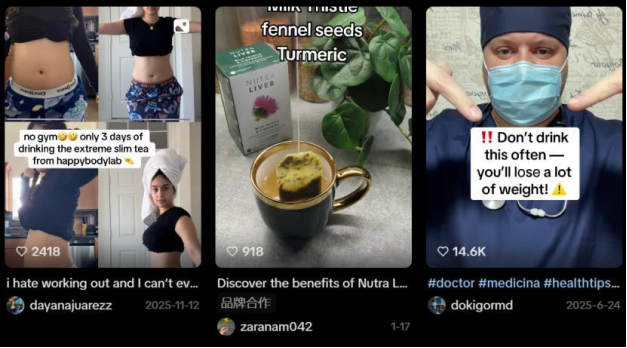
Figure 11. Example of TikTok weight-loss product content used to illustrate how body-change claims can become commercial prompts. Source: screenshot captured by authors, 2026
A third harm is the normalisation of unsustainable dieting. Extreme calorie restriction and rapid weight-loss challenges are framed as discipline, not risk. Weight cycling has been linked with cardiometabolic concerns (Rhee, 2017), yet TikTok's format rarely leaves room for long-term nutrition, sleep, movement, social support and clinical advice. These risks also deepen inequality. Users with higher digital health literacy or access to professional care are better placed to question claims. Others may rely on free, algorithmically delivered advice because formal support is costly, slow or culturally inaccessible. This makes credibility evaluation a public health issue, not simply an individual skill (Merga, 2025).
4.2 Conditional benefits
The positive side should not be dismissed. TikTok can make some health information more accessible, especially for people who do not read formal public health guidance or feel excluded from clinical spaces. Studies of digital health interventions suggest that technology-based approaches can be acceptable additions to conventional weight-management support for young people (Kouvari et al., 2022). Research on TikTok health knowledge accounts also shows that short video can spread health science information when content quality, topic relevance and professional credibility are present (Tian, Liu and Zhang, 2023).
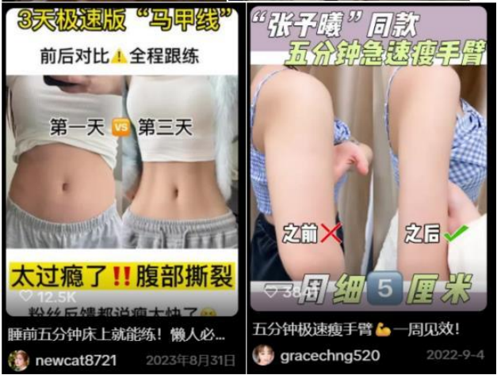
Figure 12. Example of weight-loss content in a TikTok feed, showing how visual transformation and health claims appear together. Source: screenshot captured by authors, 2026
Influencers can also support behaviour change when used carefully. Because they are embedded in social networks, they can make healthy behaviours feel relatable (Smit et al., 2022). A beginner workout, budget meal plan or recovery-focused creator can matter. But relatability is not evidence. Positive videos should be held to the same credibility standard as negative ones: transparent sourcing, clear limits, no exaggerated promises and visible separation between personal experience and commercial claims.
4.3 Algorithmic sorting and unequal exposure
The biggest public health issue is that users are unlikely to see a balanced mix of helpful and harmful content. TikTok states that For You recommendations are shaped by interactions such as likes, shares, comments, watch time, skips and searches (TikTok, no date). That means a pause on extreme dieting content may become a signal for more of the same. Vera and Ghosh (2025) similarly describe TikTok recommendations as highly personalised, including cases where unwanted content persists after a single search or interaction.
So TikTok's benefits and harms may sort into different bubbles. A user who follows qualified dietitians may receive evidence-informed advice and supportive communities. A user who pauses on detox content, body-checking or rapid transformation clips may be pulled toward riskier content. The same platform can support one user's health literacy while intensifying another user's exposure to anxiety, misinformation and commercial pressure.
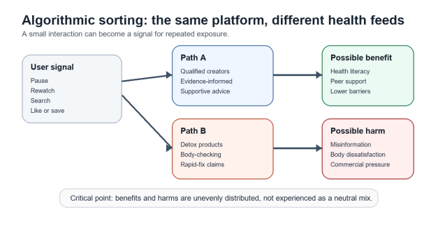
Figure 13. Algorithmic sorting pathway showing why helpful and harmful health content may not be distributed evenly across users. Source: created by authors, 2026.
4.4 The TikTok paradox
The paradox is not that TikTok harms and helps equally. It is that the same tools can do either, depending on evidence, transparency and incentive. Short videos can simplify useful advice, or oversimplify science. Influencer trust can humanise public health, or make advertising feel intimate. Recommendation systems can connect users to support, or trap them in repeated exposure to risk. The public health question is therefore how TikTok's commercial health influence can be made accountable to evidence, transparency and equity. That question leads directly to governance.
Important: Try not to frame this as simply 'TikTok is bad'. A stronger argument is that health impacts depend on unequal content exposure, platform design, commercial incentives and evidence quality.
Part 5
5. Governance: Who Should Decide, and How?
5.1 Who decides what counts as harmful health information?
A key challenge in governing health information on social media is defining what counts as 'harmful' content. While clearly false medical claims can often be identified, much TikTok health content exists in a grey area.
Influencers often share simplified or exaggerated advice that may not be completely false but can still mislead audiences. Personal experiences are also frequently presented as general health guidance, making it difficult to separate storytelling from professional medical advice (Wardle and Derakhshan, 2017; Ecker et al., 2022).
Therefore, definitions of harmful information are shaped by governments, platforms, professionals, and users, who may all hold different views.
5.2 Government regulation: necessary but limited
Government regulation is important for establishing standards for online health information. Policies can require transparency, such as disclosure of sponsored content, and create legal consequences for false or harmful health claims.
Recent policies, including the European Union's Digital Services Act and the UK's Online Safety Act, show increasing efforts to hold platforms accountable (European Union, 2022; UK Government, 2023).
However, regulation also faces limitations. Policy development is often slow and struggles to keep pace with rapidly changing digital platforms. In addition, social media operates globally, making enforcement across countries difficult (Santos Okholm et al., 2024). As a result, governments can provide legal frameworks, but they cannot fully solve the problem of online health misinformation.
5.3 Platform governance: fast but conflicted
Platforms such as TikTok have significant power to regulate content through moderation systems, fact-checking, and algorithmic controls. TikTok (2024a) states that harmful misinformation is prohibited and that misleading health content may be removed or restricted from recommendation systems. The platform also works with fact-checking organisations and public health guidance to assess content accuracy (2024b).
Despite these measures, research shows that misleading health information continues to spread widely on TikTok (Basch et al., 2022). One reason is that TikTok's algorithm prioritises engagement and user interaction. Emotionally appealing or simplified content often receives more attention than accurate but complex medical information. This creates a structural conflict between public health goals and commercial incentives based on user engagement.
Another issue is the lack of transparency in platform governance. Although TikTok publishes community guidelines, the specific criteria used to evaluate and moderate content are not always clear.
Studies suggest that platform moderation remains inconsistent and limited given the enormous scale of user-generated content uploaded every day (Zeng and Schäfer, 2021). Therefore, while platforms can respond quickly, self-regulation alone is unlikely to fully address the complexity of online health misinformation.
5.4 Should health influencers require qualifications?
Some researchers argue that health influencers should hold formal qualifications to improve credibility and reduce misinformation. However, defining who qualifies as a trusted expert is difficult. Online health communication includes doctors, dietitians, fitness professionals, and ordinary users sharing personal experiences (Clark et al., 2018).
In addition, the boundary between sharing experiences and giving professional advice is often unclear (Freeman et al., 2015). Strict qualification systems could reduce misinformation, but they may also limit valuable lived experiences and open discussion. Enforcement would also be difficult because TikTok operates globally and professional standards differ between countries.
5.5 A realistic way forward
Because of these challenges, there is no single solution to governing health misinformation online (World Health Organization, 2022). A more realistic approach requires cooperation between governments, platforms, health professionals, and users. Governments can establish legal standards and transparency rules, while platforms should improve moderation systems and provide clearer labelling of health-related content. Verified expert systems may also help audiences identify credible professionals without completely excluding non-expert voices.
At the same time, improving digital literacy is essential. Users need skills to critically evaluate online information rather than simply trust viral content. Media literacy programmes and public health campaigns can help users recognise misleading claims, evaluate sources, and understand how algorithms influence what they see online (Jafar et al., 2023). Strengthening the presence of reliable public health institutions on TikTok may also improve access to trustworthy information, as shown during the COVID-19 pandemic (Li et al., 2021).
Overall, health misinformation is a complex and systemic issue that cannot be solved through content removal alone. Effective governance requires balancing accuracy, accessibility, and freedom of expression while adapting to the rapidly changing nature of social media platforms (Kozyreva et al., 2024; Ecker et al., 2022).
Part 6
Conclusion
This blog has shown that TikTok is not simply a platform for sharing wellness advice, but a commercial ecosystem where health attention, emotional engagement and consumer behaviour are closely connected. Through algorithms, influencer storytelling and TikTok Shop integration, health concerns such as weight loss and body image are transformed into profitable content and immediate purchasing opportunities.
While TikTok can increase access to relatable health information and supportive communities, its design also amplifies misinformation, body dissatisfaction and impulsive consumption, particularly among vulnerable young users. These risks reflect broader commercial determinants of health, where platform incentives shape how health knowledge is produced, circulated and trusted. Therefore, the challenge is not only removing harmful content, but creating systems of governance that balance public health protection, freedom of expression and digital accessibility. Improving platform transparency, strengthening regulation and developing users' digital health literacy will all be essential to making online health environments safer and more equitable.
Presentation
Group presentation video
References
Reference list
Abidin, C. (2016) 'Visibility labour: Engaging with influencers' fashion brands and #OOTD advertorial campaigns on Instagram', Media International Australia, 161(1), pp. 86-100. Available at: https://doi.org/10.1177/1329878X16665177.
Basch, C.H., Meleo-Erwin, Z., Fera, J., Jaime, C. and Basch, C.E. (2022) 'A global pandemic in the time of viral memes: COVID-19 vaccine misinformation on TikTok', Journal of Medical Internet Research, 24(5), e38199. Available at: https://doi.org/10.2196/38199.
Blackburn, M.R. and Hogg, R.C. (2024) '#ForYou? The impact of pro-ana TikTok content on body image dissatisfaction and internalisation of societal beauty standards', PLoS ONE, 19(8), e0307597. Available at: https://doi.org/10.1371/journal.pone.0307597.
Borges do Nascimento, I.J. et al. (2022) 'Infodemics and health misinformation: A systematic review of reviews', Bulletin of the World Health Organization, 100(9), pp. 544-561. Available at: https://doi.org/10.2471/BLT.21.287654.
Clark, R.E. et al. (2018) 'Health care utilization and expenditures of homeless family members before and after emergency housing', American Journal of Public Health, 108(6), pp. 808-814. Available at: https://doi.org/10.2105/AJPH.2018.304370.
DemandSage (2025) How many people use TikTok? 2024 statistics. Available at: https://www.demandsage.com/tiktok-user-statistics/ (Accessed: 27 May 2026).
Djafarova, E. and Bowes, T. (2021) '"Instagram made me buy it": Generation Z impulse purchases in fashion industry', Journal of Retailing and Consumer Services, 59, 102345. Available at: https://doi.org/10.1016/j.jretconser.2020.102345.
Ecker, U.K.H. et al. (2022) 'The psychological drivers of misinformation belief and its resistance to correction', Nature Reviews Psychology, 1(1), pp. 13-29. Available at: https://doi.org/10.1038/s44159-021-00006-y.
European Union (2022) Regulation (EU) 2022/2065 of the European Parliament and of the Council: Digital Services Act. Available at: https://eur-lex.europa.eu/eli/reg/2022/2065/oj (Accessed: 27 May 2026).
Festinger, L. (1954) 'A theory of social comparison processes', Human Relations, 7(2), pp. 117-140. Available at: https://doi.org/10.1177/001872675400700202.
Freeman, B., Potente, S., Rock, V. and McIver, J. (2015) 'Social media campaigns that make a difference: What can public health learn from the corporate sector and other social change marketers?', Public Health Research & Practice, 25(2), e2521517. Available at: https://doi.org/10.17061/phrp2521517.
Haiduoke Cross-border Navigation (2025a) 25 tian ruzhang jin 1000 wan yuan? Guonei mai 10 yuan meiren yao, TikTok Meiqu daque zai 25 tian kuangmai 880 wan. Available at: https://www.asiaecs.com/daohang/3217.html (Accessed: 28 April 2026).
Haiduoke Cross-border Navigation (2025b) Cong 10 yuan dao 1000 wan: TikTok jianfei chanpin de shangyehua luojing. Available at: https://www.asiaecs.com/daohang/3859.html (Accessed: 28 April 2026).
IT Home (2025) Guochan shuaizhiji tongguo TikTok maichu 12 wandan, xiaoshou e tupo 1000 wan meijin. Available at: https://www.ithome.com/0/686/765.htm (Accessed: 28 April 2026).
Jafar, Z., Quick, J.D., Larson, H.J. et al. (2023) 'Social media for public health: Reaping the benefits, mitigating the harms', Health Promotion Perspectives, 13(2), pp. 105-112. Available at: https://doi.org/10.34172/hpp.2023.13.
Kickbusch, I., Allen, L. and Franz, C. (2016) 'The commercial determinants of health', The Lancet Global Health, 4(12), pp. e895-e896. Available at: https://doi.org/10.1016/S2214-109X(16)30217-0.
Kouvari, M. et al. (2022) 'Digital health interventions for weight management in children and adolescents: Systematic review and meta-analysis', Journal of Medical Internet Research, 24(2), e30675. Available at: https://doi.org/10.2196/30675.
Kozyreva, A., Lewandowsky, S. and Hertwig, R. (2024) 'Toolbox of individual-level interventions against online misinformation', Nature Human Behaviour, 8, pp. 1044-1052. Available at: https://doi.org/10.1038/s41562-024-01881-0.
Li, Y., Guan, M., Hammond, P. and Berrey, L.E. (2021) 'Communicating COVID-19 information on TikTok: A content analysis of TikTok videos from official accounts featured in the COVID-19 information hub', Health Education Research, 36(3), pp. 261-271. Available at: https://doi.org/10.1093/her/cyab010.
Lupton, D. (2016) The Quantified Self: A Sociology of Self-Tracking. Cambridge: Polity Press.
Merga, M.K. (2025) 'TikTok and digital health literacy: A systematic review', IFLA Journal, 51(2). Available at: https://doi.org/10.1177/03400352241286175.
Metricool (2024) 50 TikTok statistics in 2024 for social media marketing. Available at: https://metricool.com/tiktok-statistics/ (Accessed: 27 May 2026).
Omar, B. and Dequan, W. (2020) 'Watch, share or create: The influence of personality traits and user motivation on TikTok mobile video usage', International Journal of Interactive Mobile Technologies, 14(4), pp. 121-137. Available at: https://doi.org/10.3991/ijim.v14i04.12429.
Paul, B. and Headley-Johnson, S.-A. (2025) 'The impact of social media on health behaviors: A systematic review', Healthcare, 13(21), 2763. Available at: https://doi.org/10.3390/healthcare13212763.
Pew Research Center (2024) How U.S. adults use TikTok. Available at: https://www.pewresearch.org/internet/2024/02/22/how-u-s-adults-use-tiktok/ (Accessed: 27 May 2026).
Pryde, S. and Prichard, I. (2022) 'TikTok on the clock but the #fitspo don't stop: The impact of TikTok fitspiration videos on women's body image concerns', Body Image, 43, pp. 244-252. Available at: https://doi.org/10.1016/j.bodyim.2022.09.004.
Rhee, E.-J. (2017) 'Weight cycling and its cardiometabolic impact', Journal of Obesity & Metabolic Syndrome, 26(4), pp. 237-242. Available at: https://doi.org/10.7570/jomes.2017.26.4.237.
Santos Okholm, C., Ebrahimi Fard, A. and ten Thij, M. (2024) 'Blocking the information war? Testing the effectiveness of the EU's censorship of Russian state propaganda among the fringe communities of Western Europe', Internet Policy Review, 13(3). Available at: https://doi.org/10.14763/2024.3.1788.
Smit, C.R. et al. (2022) 'Motivating social influencers to engage in health behavior interventions', Frontiers in Psychology, 13. Available at: https://doi.org/10.3389/fpsyg.2022.885688.
Tian, Y., Liu, S. and Zhang, D. (2023) 'Clearness qualitative comparative analysis of the spread of TikTok health science knowledge popularization accounts', Digital Health, 9. Available at: https://doi.org/10.1177/20552076231219116.
TikTok (2024a) Community Guidelines. Available at: https://www.tiktok.com/community-guidelines (Accessed: 29 April 2026).
TikTok (2024b) Safety, policies and engagement overview. Available at: https://www.tiktok.com/safety/en/policies-and-engagement/overview (Accessed: 29 April 2026).
TikTok (no date) How content is recommended across TikTok. Available at: https://support.tiktok.com/en/using-tiktok/exploring-videos/how-tiktok-recommends-content (Accessed: 26 May 2026).
TikTok Business (2023) From discovery to purchase: The role of community commerce. Available at: https://ads.tiktok.com/business/library/TikTok_Publicis_WARC_WhitePaper.pdf (Accessed: 27 May 2026).
UK Government (2023) Online Safety Act 2023. Available at: https://www.legislation.gov.uk/ukpga/2023/50/contents/enacted (Accessed: 27 May 2026).
Vera, J.A. and Ghosh, S. (2025) '"They've over-emphasized that one search": Controlling unwanted content on TikTok's For You Page', pp. 1-8. Available at: https://doi.org/10.1145/3706598.3713666.
Wardle, C. and Derakhshan, H. (2017) Information disorder: Toward an interdisciplinary framework for research and policy making. Strasbourg: Council of Europe. Available at: https://rm.coe.int/information-disorder-report/168076277c (Accessed: 27 May 2026).
World Health Organization (2022) Managing the COVID-19 infodemic: Call for action. Available at: https://www.who.int/publications/i/item/9789240010314 (Accessed: 27 May 2026).
World Health Organization (2023) Commercial determinants of health. Available at: https://www.who.int/news-room/fact-sheets/detail/commercial-determinants-of-health (Accessed: 27 May 2026).
Yiofong (2025) Yitiao shipin daihuo shangwan dan, xiaozhong pinpai zai TikTok maibao. Available at: https://www.analysys.cn/article/analysis/202506/24354.shtml (Accessed: 28 April 2026).
Zeng, J. and Schäfer, M.S. (2021) 'Conceptualizing "dark platforms": COVID-19-related conspiracy theories on TikTok and YouTube', Social Media + Society, 7(3). Available at: https://doi.org/10.1177/20563051211034098.